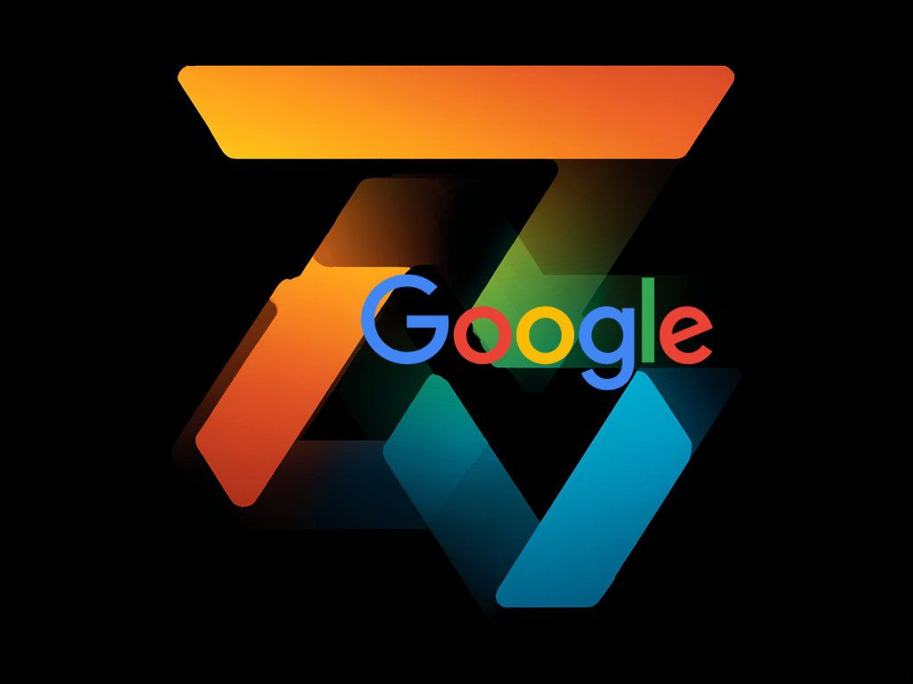

Google Ads
Optimization
Warmińskie Centrum Psychoterapii — Deep Analysis & 30-Day Performance Rescue Plan
Day 0 actions completed. Dead campaign stopped. Keyword bleed stopped. Negative keyword lists deployed at campaign & account level. First A/B search campaign entered for testing. Next analysis: 25 April 2026.
📋 Contents
Executive Summary
The optimization action plan has been put into action. Terapia Indywidualna campaign is stopped. Keyword bleed (NFZ + irrelevant queries) has been stopped — negative keyword lists added at both campaign and account level. Keyword lists have been updated across all campaigns. The first A/B search ad campaign has been entered for testing. A follow-up analysis report is scheduled for 25 April 2026.
WCP's Google Ads account was at breakeven (ROAS 0.99x) — every zloty spent returned approximately one zloty in revenue. Three critical issues were identified and Day 0 actions have now been implemented:
1. "Terapia Indywidualna" campaign — 0 conversions, burning 55 PLN/day. ✅ STOPPED.
2. NFZ keyword leak — patients searching for free therapy were clicking paid ads and bouncing. ✅ BLEED STOPPED. Negative keyword lists deployed at campaign & account level.
3. Elbląg campaign overspend — CPA of 102.74 PLN, 2x the Olsztyn CPA. ⏳ IN PROGRESS. New ad copy A/B test entered.
The 30-Day Fix Plan — At a Glance
The plan is deliberately front-loaded. The biggest gains come from stopping waste, not from adding new spend. Day 0 actions alone should improve ROAS by 15–25% by eliminating the dead campaign and NFZ leak. Days 7–14 refine targeting precision. Day 30 adds growth layers on a now-functional foundation.
Campaign Audit — Current State
Account Overview
Campaign-by-Campaign Breakdown
| Campaign | Type | Daily Budget | CPA | Conversions | Match Type Mix | Status |
|---|---|---|---|---|---|---|
| Brand — WCP | Search | 35 PLN | 11.85 PLN | ✓ Active | Exact | BEST PERFORMER |
| Olsztyn | Search | 60 PLN | ~50 PLN | ✓ Active | Broad-heavy | NEEDS REFINEMENT |
| Elbląg | Search | 50 PLN | 102.74 PLN | Low | Broad-heavy | OVERSPENDING |
| Ostróda | Search | 45 PLN | ~55 PLN | ✓ Active | Broad-heavy | UNDERINVESTED |
| Terapia Indywidualna | Search | 55 PLN | ∞ (0 conv.) | 0 | Broad | ✅ STOPPED 18 APR |
Match Type Distribution (Account-Wide)
| Match Type | Share | Assessment | Target |
|---|---|---|---|
| Broad Match | 48% | Far too high — wasting spend on untargeted queries | 30% |
| Exact Match | ~35% | Below optimal — need more precise targeting | 55% |
| Phrase Match | ~17% | Reasonable but room to grow | 15% |
Critical Issues — 3 Alarms
0 conversions. This campaign had not produced a single patient booking. At 55 PLN/day, it was burning approximately 1,650 PLN/month with zero return.
The campaign targeted generic therapy keywords ("terapia indywidualna") with broad match — attracting searches like "terapia indywidualna nfz", "terapia indywidualna jak zostać", "terapia indywidualna kurs". None of these were patient-intent queries.
Patients searching "terapia nfz", "psycholog bezpłatna konsultacja", or "pomoc psychologiczna darmowa" were clicking on WCP's paid ads and then bouncing when they discovered sessions cost 250 PLN.
Why this hurt: You paid for every click (typically 3–8 PLN for therapy keywords). The patient got nothing. You got nothing. Google got paid. The search term report confirmed NFZ-related queries appeared across multiple ad groups.
The Elbląg campaign's CPA is 102.74 PLN — more than double the Olsztyn CPA of ~50 PLN. This isn't because Elbląg patients are less likely to convert; it's because the campaign is poorly structured:
- 72 untargeted search terms triggering ads — everything from "psycholog elbląg nfz" to "praca psycholog elbląg"
- Generic ad copy not tailored to the Elbląg location or clinic specifics
- No Elbląg-specific negative keywords — job seekers, students, and NFZ searchers all click and bounce
- Broad match dominance — casting a wide net in a small pond, catching everything except patients
625 out of 677 keywords have no Quality Score assigned. This means Google's system doesn't have enough data to evaluate these keywords — they're either generating zero impressions or their impressions are so low that statistical significance hasn't been reached.
Keywords without QS are effectively invisible to Google's optimization algorithms. They don't participate in ad rank calculations properly, they can't benefit from QS-based CPC reductions, and they inflate account-level metrics negatively.
Day 0 — Immediate Actions
Action 1: Pause "Terapia Indywidualna" Campaign — ✅ COMPLETED
Campaign stopped
Terapia Indywidualna campaign has been fully paused. The 55 PLN/day spend on a campaign producing 0 conversions is now eliminated. Monthly savings: ~1,650 PLN. Budget reallocated to Brand + Ostróda per Day 30 plan.
Action 2: Add NFZ Negative Keywords — ✅ COMPLETED
NFZ-related negative keywords have been added as campaign-level and account-level negative keyword lists to every active campaign:
| Category | Negative Keywords | Match Type |
|---|---|---|
| NFZ — Direct | nfz, na nfz, z nfz, przez nfz, od nfz, przy nfz | Exact + Phrase |
| NFZ — Descriptive | bezpłatna, darmowa, bezpłatnie, za darmo, bez opłat, bezpłatna terapia | Exact + Phrase |
| NFZ — Variants | nfz terapia, nfz psycholog, nfz psychoterapia, poradnia nfz, przychodnia nfz | Phrase |
| Free-Seeking | za darmo terapia, bezpłatna konsultacja, bezpłatna pomoc | Phrase |
Total: 20+ NFZ-related negative keywords. Deployed as shared negative keyword list at campaign and account level for easy management.
Action 3: Add Universal Negative Keywords — ✅ COMPLETED
Universal negatives have been deployed across all campaigns at campaign and account level:
| # | Negative Keyword | Reason |
|---|---|---|
| 1 | praca | Job seekers ("praca psycholog") |
| 2 | вакансия | Russian job seekers |
| 3 | studia | Students researching ("studia psychologia") |
| 4 | kurs | Course seekers |
| 5 | szkolenie | Training seekers |
| 6 | forum | Discussion seekers |
| 7 | blog | Content consumers |
| 8 | wikipedia | Information seekers |
| 9 | książka | Book buyers |
| 10 | Document seekers | |
| 11 | jak zostać | Career changers ("jak zostać psychologiem") |
| 12 | ile zarabia | Salary researchers |
| 13 | czy warto | General researchers |
| 14 | rekrutacja | Recruitment searchers |
Action 4: Confirm Brand Campaign Targeting — ✅ COMPLETED
Brand campaign keywords verified as exact-match only
The Brand campaign (best performer, CPA 11.85 PLN) confirmed with exact-match only keywords. Budget increase considered per Day 30 plan.
Action 5: First A/B Search Ad Campaign — ✅ ENTERED FOR TESTING
A/B search ad campaign entered
The first A/B search ad campaign has been set up and entered for testing. This enables data-driven optimization of ad copy across campaigns. Results will be evaluated as part of the 7-day follow-up analysis.
7-Day Fix — Elbląg Rescue
Elbląg Campaign Overhaul
The Elbląg campaign currently operates at CPA 102.74 PLN — the worst of any active campaign. The fix has four components:
Testing plan: Run all three variants with equal rotation for 7 days. After 7 days, pause the worst performer and keep the top two. Use ad strength indicators in Google Ads to monitor quality.
| # | Negative Keyword | Blocks |
|---|---|---|
| 1 | praca psycholog elbląg | Job seekers |
| 2 | oferty pracy elbląg | Job seekers |
| 3 | rekrutacja psycholog elbląg | Recruitment |
| 4 | studia psychologia elbląg | Students |
| 5 | kierunek psychologia elbląg | Students |
| 6 | nfz elbląg psycholog | NFZ seekers |
| 7 | poradnia zdrowia psychicznego elbląg | NFZ seekers |
| 8 | bezpłatna pomoc elbląg | Free-seekers |
| 9 | szkolenie elbląg | Training seekers |
| 10 | kurs psychoterapii elbląg | Course seekers |
| 11 | wynagrodzenie psycholog elbląg | Salary researchers |
| 12 | ile zarabia psycholog elbląg | Salary researchers |
| 13 | jak zostać psychoterapeutą | Career changers |
| 14 | staż psycholog elbląg | Intern seekers |
| 15 | volontariat elbląg | Volunteer seekers |
| 16 | praktyki psychologia elbląg | Internship seekers |
The Elbląg campaign currently triggers on 72 distinct search terms, the vast majority of which are irrelevant. The target is to reduce this to fewer than 15 targeted, high-intent terms.
Review the Search Terms report
Go to Keywords → Search Terms → filter for Elbląg campaign. Identify every term that is not clearly patient-intent (someone looking to book a session).
Add irrelevant terms as negatives
Each irrelevant search term gets added as a negative keyword. This prevents future clicks from that query.
Convert high-performers to exact match
Any search term that actually converted should become an exact-match keyword in its own right.
Conversion tracking via Booknetic may not be firing correctly. If Google Ads doesn't know which clicks convert, it can't optimize bidding, and reported CPA figures may be inaccurate.
14-Day Optimization — Precision Tuning
1. Match Type Rebalancing
Current distribution is dangerously broad-heavy. The goal is to flip the ratio toward exact match, which gives WCP control over exactly which queries trigger ads.
| Match Type | Current | Target | Action |
|---|---|---|---|
| Broad Match | 48% | 30% | Convert underperforming broad keywords to phrase/exact. Delete broad keywords with 0 conversions after 30 days. |
| Exact Match | ~35% | 55% | Add exact-match variants of top-performing search terms. Create new exact keywords from conversion data. |
| Phrase Match | ~17% | 15% | Keep stable — phrase match provides good coverage with reasonable control. |
2. Quality Score Optimization — Top 20 Keywords by Spend
The 20 keywords consuming the most budget should be audited for Quality Score. For each keyword with QS < 5:
- Ad relevance: Does the ad copy explicitly mention the keyword? If not, create a new ad group specifically for that keyword cluster
- Landing page relevance: Does the landing page match the keyword intent? A search for "psychoterapia Elbląg" should land on the Elbląg-specific page, not the homepage
- Expected CTR: Is the keyword generating impressions but no clicks? Consider pausing or restructuring
3. Ad Schedule & Device Bid Modifiers
After 14 days of clean data (post-Day 0 and Day 7 fixes), analyze performance by:
Therapy bookings follow predictable patterns. Most patients book during:
- 8:00–10:00 — morning decision-makers (before work)
- 12:00–14:00 — lunch break browsers
- 19:00–22:00 — evening researchers (highest intent, often after a difficult day)
Apply +20% bid adjustments to high-conversion hours and -30% to low-conversion hours (typically 23:00–06:00).
Review conversion rates by device. Typical therapy booking patterns:
- Mobile: Higher CTR, lower conversion rate (people browse on phone, book later on desktop). Apply -10% if mobile conv. rate < 50% of desktop
- Desktop: Lower CTR, higher conversion rate. Apply +15% if desktop converts 2x+ better
- Tablet: Usually similar to desktop. Apply same modifiers unless data shows otherwise
4. Conversion Value Tracking
Implementation: In the Booknetic booking confirmation page, add the conversion value parameter to the Google Ads conversion tag:
'send_to': 'AW-XXXXXX/XXXXXX',
'value': 250.0,
'currency': 'PLN'
});
30-Day Growth — Scale & Expand
Budget Reallocation
With the dead campaign paused and underperformers fixed, reallocate daily budget to proven winners and growth opportunities:
| Campaign | Current Budget | New Budget | Change | Rationale |
|---|---|---|---|---|
| Brand — WCP | 35 PLN/day | 70 PLN/day | +100% | Best CPA (11.85 PLN). Captures high-intent brand searchers. Double budget = double brand conversions. |
| Olsztyn | 60 PLN/day | 60 PLN/day | No change | Stable performer. Maintain while optimizing match types. |
| Elbląg | 50 PLN/day | 45 PLN/day | -10% | Reduced after Day 7 fixes. Lower CPA should offset reduced spend. |
| Ostróda | 45 PLN/day | 65 PLN/day | +44% | Underserved market. New clinic (Mar 2025) needs visibility. Add 12 new exact keywords. |
| Terapia Indywidualna | 55 PLN/day | PAUSED | — | 0 conversions. Budget reallocated to Brand + Ostróda. |
| NEW: Online Therapy | — | 50 PLN/day | New | Counter national platforms. Capture "terapia online" searches. |
Ostróda Expansion
| # | Keyword (Exact Match) | Intent |
|---|---|---|
| 1 | [psychoterapia ostróda] | Core — therapy search |
| 2 | [psycholog ostróda] | Core — psychologist search |
| 3 | [terapeuta ostróda] | Core — therapist search |
| 4 | [pomoc psychologiczna ostróda] | Help-seeking |
| 5 | [terapia par ostróda] | Couples therapy |
| 6 | [psychoterapia online ostróda] | Online + local |
| 7 | [psycholog dziecięcy ostróda] | Child psychology |
| 8 | [terapia lęków ostróda] | Anxiety-specific |
| 9 | [depresja pomoc ostróda] | Depression help |
| 10 | [warmińskie centrum psychoterapii ostróda] | Brand + location |
| 11 | [wcp ostróda] | Brand short |
| 12 | [sesja psychoterapii ostróda] | Session-intent |
New Ostróda ad copy (Polish):
NEW Campaign: Online Therapy
This campaign counters the threat from national platforms (Wellbee, TwojPsycholog) by capturing patients searching for online therapy nationwide, not just in Warmia.
Campaign Structure
| Ad Group | Keywords | Match Type |
|---|---|---|
| Online Therapy — General | terapia online, psychoterapia online, pomoc psychologiczna online | Exact + Phrase |
| Online Psychologist | psycholog online, psycholog przez internet, konsultacja psychologiczna online | Exact + Phrase |
| Online Therapy — Specific | psychoterapia internetowa, terapia online cbt, sesja terapeutyczna online | Exact |
Ad copy for Online Therapy campaign:
Campaign-level negatives: Add all NFZ + universal negatives from Day 0, PLUS: "therapify", "mindgram", "wellbee" (competitor brand names — don't bid on these, but block your ads from appearing alongside them in some contexts).
ROAS Trajectory
| Milestone | Expected ROAS | Key Driver |
|---|---|---|
| Day 0 (immediate) | 1.2–1.3x | Dead campaign pause + NFZ negatives |
| Day 7 | 1.5x | Elbląg fix + new ad copy |
| Day 14 | 1.7x | Match type rebalancing + QS + bid modifiers |
| Day 30 | 2.0x | Budget reallocation + Ostróda + Online Therapy |
| Day 60 | 2.5x | Smart bidding + refined targeting + landing page optimization |
Negative Keyword Master List
Universal Negatives — Apply to ALL Campaigns (40+ keywords)
| Category | Keywords |
|---|---|
| NFZ / Free | nfz, na nfz, z nfz, przez nfz, od nfz, przy nfz, bezpłatna, darmowa, bezpłatnie, za darmo, bez opłat, bezpłatna terapia, nfz terapia, nfz psycholog, nfz psychoterapia, poradnia nfz, przychodnia nfz, za darmo terapia, bezpłatna konsultacja, bezpłatna pomoc |
| Job / Career | praca, вакансия, rekrutacja, oferty pracy, ogłoszenia pracy, jak zostać, ile zarabia, czy warto, wynagrodzenie, staż, praktyki, volontariat |
| Education | studia, kurs, szkolenie, kierunek psychologia, studia podyplomowe |
| Information / Content | forum, blog, wikipedia, książka, pdf, artykuł, artykuły, test online, quiz |
Elbląg-Specific Negatives (16 keywords)
| # | Negative Keyword | Blocks |
|---|---|---|
| 1 | praca psycholog elbląg | Job seekers |
| 2 | oferty pracy elbląg | Job seekers |
| 3 | rekrutacja psycholog elbląg | Recruitment |
| 4 | studia psychologia elbląg | Students |
| 5 | kierunek psychologia elbląg | Students |
| 6 | nfz elbląg psycholog | NFZ seekers |
| 7 | poradnia zdrowia psychicznego elbląg | NFZ seekers |
| 8 | bezpłatna pomoc elbląg | Free-seekers |
| 9 | szkolenie elbląg | Training seekers |
| 10 | kurs psychoterapii elbląg | Course seekers |
| 11 | wynagrodzenie psycholog elbląg | Salary researchers |
| 12 | ile zarabia psycholog elbląg | Salary researchers |
| 13 | jak zostać psychoterapeutą | Career changers |
| 14 | staż psycholog elbląg | Intern seekers |
| 15 | volontariat elbląg | Volunteer seekers |
| 16 | praktyki psychologia elbląg | Internship seekers |
Olsztyn-Specific Negatives (8 keywords)
| # | Negative Keyword | Blocks |
|---|---|---|
| 1 | praca psycholog olsztyn | Job seekers |
| 2 | studia psychologia uwm | UWM students |
| 3 | kierunek psychologia olsztyn | Prospective students |
| 4 | poradnia zdrowia psychicznego olsztyn nfz | NFZ seekers |
| 5 | bezpłatna pomoc psychologiczna olsztyn | Free-seekers |
| 6 | szkolenie psychoterapeuta olsztyn | Training seekers |
| 7 | rekrutacja olsztyn psycholog | Recruitment |
| 8 | ile zarabia psycholog olsztyn | Salary researchers |
Ostróda-Specific Negatives (4 keywords)
| # | Negative Keyword | Blocks |
|---|---|---|
| 1 | praca psycholog ostróda | Job seekers |
| 2 | nfz ostróda psycholog | NFZ seekers |
| 3 | bezpłatna pomoc ostróda | Free-seekers |
| 4 | studia psychologia ostróda | Students |
Risk Matrix — What Could Go Wrong
✅ High Impact · Low Risk
- Pausing dead campaign — no downside, guaranteed savings
- Adding NFZ negatives — eliminates waste, no conversion loss
- Adding universal negatives — pure waste removal
- Confirming Brand exact match — protects best CPA
⚠️ High Impact · Medium Risk
- Match type rebalancing — may temporarily reduce impression volume while Google relearns
- Budget reallocation — if Ostróda/Brand don't absorb extra budget efficiently, some waste
- Online therapy campaign — new campaign, unknown conversion rate in early days
📊 Low Impact · Low Risk
- Ad copy A/B testing — worst case, no improvement
- Device bid modifiers — small adjustments, easily reversible
- Ad schedule changes — conservative ±20% is safe
❌ Low Impact · Higher Risk
- Aggressive broad match elimination — too fast may choke volume before exact keywords ramp
- Smart bidding too early — needs 50+ conversions with value first
- Over-filtering search terms — some relevant long-tail terms may get caught
Specific Risk Scenarios
| Risk | Probability | Impact | Mitigation |
|---|---|---|---|
| Elbląg new ad copy underperforms | Medium | Medium | Keep old ad copy active alongside new variants. Pause worst performer after 7 days, not immediately. |
| Booknetic conversion tracking doesn't fire | Medium | High | Test booking flow weekly. Have backup plan: Google Ads phone call conversions as secondary action. |
| Ostróda keywords too low volume | Low | Medium | Start with 12 exact keywords. If volume is too low, add phrase match variants after 2 weeks. |
| Online therapy campaign cannibalizes location campaigns | Low | Medium | Use strict negative keywords: don't show online ads for location-specific queries. Keep ad groups cleanly separated. |
| Competitor (Wellbee) increases Google Ads spend in Warmia | Medium | Medium | Brand campaign protects against this. Monitor auction insights weekly. Increase brand bid if competition rises. |
| Google algorithm changes affect QS | Low | Medium | Focus on ad relevance + landing page quality (things Google consistently rewards). Don't chase tactical QS hacks. |
| Budget increase doesn't yield proportional conversions | Medium | Medium | Increase budgets incrementally (+20% per week), not all at once. Monitor CPA stability daily for first 2 weeks after changes. |
✅ Day 0: Pause Terapia Indywidualna campaign — COMPLETED
✅ Day 0: Add NFZ negative keyword list to all campaigns — COMPLETED (campaign + account level)
✅ Day 0: Add universal negative keyword list to all campaigns — COMPLETED (campaign + account level)
✅ Day 0: Verify Brand campaign exact-match only — COMPLETED
✅ Day 0: Keyword lists updated at campaign and account level — COMPLETED
✅ Day 0: First A/B search ad campaign entered for testing — COMPLETED
☐ Day 7: Upload 3 new Elbląg ad copy variants
☐ Day 7: Add 16 Elbląg-specific negatives
☐ Day 7: Elbląg search term cleanup (72 → <15)
☐ Day 7: Test Booknetic conversion tracking
☐ Day 14: Begin match type rebalancing
☐ Day 14: QS audit for top 20 keywords
☐ Day 14: Apply ad schedule + device bid modifiers
☐ Day 14: Add conversion value tracking (250 PLN)
☐ Day 30: Reallocate budgets per plan
☐ Day 30: Add 12 Ostróda exact keywords + new ad copy
☐ Day 30: Launch Online Therapy campaign
☐ Day 30: Verify /terapia-online landing page exists
📅 Next Analysis Report: 25 April 2026 — Cron job set to generate new Google Ads analysis report with fresh performance data.